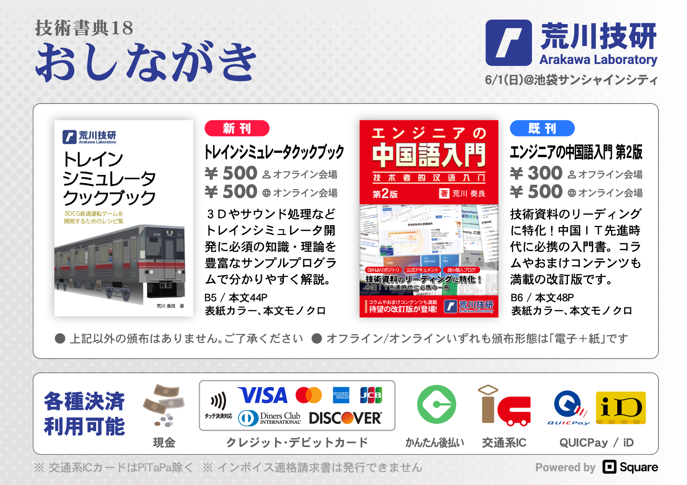
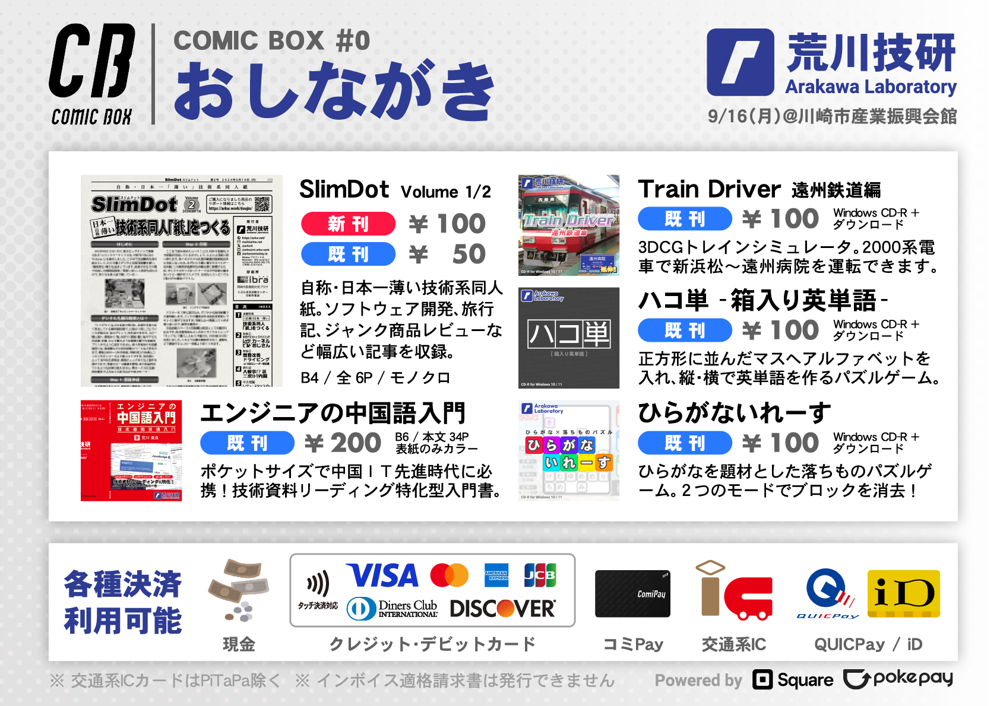
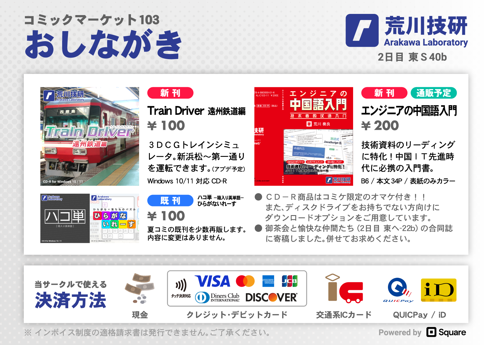

ラインアップ
書籍

2025年12月発行 / B6 / 本文52ページ / 表紙カラー、本文モノクロ
持ち運びやすいポケットサイズで中国IT先進時代に必携!
GitHubリポジトリのREADMEやAPIドキュメントなど、技術資料のリーディングに特化した中国語入門書。
好評につき、コラムや中国旅行ガイドなどおまけコンテンツも満載の「第3版」を制作しました。
文法と単語集も拡充しており、初版や第2版を既にお持ちの方もお楽しみいただけます。
2026年1月3日よりメロンブックスで委託販売を開始しました。
内容および価格は同一です。在庫状況など詳細はリンク先をご確認ください。

2025年11月発行 / B5 / 本文102ページ / 表紙カラー、本文モノクロ
新興国の経済成長・ガラケーの衰退・若者のPC離れなど様々な要因からスマートフォンの出荷台数は右肩上がり。
ジャンカーとしてもこのビッグウェーブに乗らない訳にはいきません。
本書では元々のハードウェアとソフトウェアを破壊しない範囲で、ジャンクのスマートフォンやタブレットなどAndroidデバイスを限界まで活用する方法を紹介していきます。

2025年6月発行 / B5 / 本文20ページ / フルカラー
キャッシュレス決済・POSレジ・電光掲示板…一部の界隈で行われている「異常な頒布」のうち難易度が比較的低く、運用コストも安いものを複数ピックアップして薄い本にまとめました。
10のサークルにご協力いただき、様々な写真やスクリーンショットをオールカラーで掲載しています。
2025年6月発行 / B5 / 本文44ページ / 表紙カラー、本文モノクロ
BVE
trainsimのようなアドオンを追加できるトレインシミュレータはローコードでオリジナルデータを制作できる利便性が魅力的な一方、ゲームシステムの変更やソフトウェア本体の再配布に制限が掛けられており、ゲーム開発の視点ではデメリットとなる箇所も存在します。
そこで本書には「電車でGO!」シリーズと近い3DCGトレインシミュレータをフルスクラッチ開発するため必要なコーディング技術を多数収録しました。
サウンド処理やコントローラ入力など一部の内容は実写映像で風景を描画する作品にも活用できます。

2024年12月発行 / B6 / 本文48ページ / 表紙カラー、本文モノクロ
持ち運びやすいポケットサイズで中国IT先進時代に必携!
GitHubリポジトリのREADMEやAPIドキュメントなど、技術資料のリーディングに特化した中国語入門書。
好評につき、コラムや中国旅行ガイドなどおまけコンテンツも満載の「第2版」を制作しました。
ページ数1.5倍で、初版を既にお持ちの方もお楽しみいただけます。

2023年12月発行 / B6 / 本文34ページ / 表紙カラー、本文モノクロ
持ち運びやすいポケットサイズで中国IT先進時代に必携!
GitHubリポジトリのREADMEやAPIドキュメントなど、技術資料のリーディングに特化した中国語入門書です。
※ SlimDotシリーズについては SlimDot WEB をご覧ください。
PCゲーム
Windows 11向けCD-R + ダウンロード
オープンソースの3DCG地下鉄運転ゲーム「もっと! 地下鉄 大名古屋」をパッケージ化。売上が全て制作費となる支援グッズです。

Windows 10/11向けCD-R + ダウンロード
3DCGトレインシミュレータ「Train Driver 遠州鉄道編」のパッケージ版。遠州鉄道2000系電車で新浜松～遠州病院を運転できます。
オリジナルサウンドトラックのオマケ付き。
Windows 10/11向けCD-R + ダウンロード
「ハコ単 -箱入り英単語-」のパッケージ版。英単語を題材としたパズルゲームです。
正方形に並んだマスへアルファベットを入れ、縦・横で英単語を作るとスコアが増えます。長い英単語や連続判定
(コンボ) で高得点を目指しましょう! オリジナルサウンドトラックのオマケ付き。
Windows 10/11向けCD-R + ダウンロード
「ひらがないれーす」のパッケージ版。ひらがなを題材とした落ちものパズルゲームです。
テトリスと同様に横一列が並ぶと消える「ブロックモード」と縦・横で単語を作って消す「ひらがなモード」を切り替え、フィールド内のブロックを消去しよう!
オリジナルサウンドトラックのオマケ付き。
イベント参加情報
コミックマーケット107
2025年12月30日 (火) ～31日 (水) ＠ 東京ビッグサイト
2日目 南1ホール l45a「荒川技研」(Web Catalog
/
会場MAP)

技術書典19
オフライン会場 : 2025年11月16日 (日) ＠ 池袋サンシャインシティ 文化会館ビル 展示ホールD
オンライン会場 : 2025年11月15日 (土) ～30日 (日) ＠ 技術書典オンラインマーケット
く07「荒川技研」(サークル配置図)

- オフライン会場/オンライン会場いずれも頒布形態は「電子+紙」です。
おもしろ同人誌バザール@神保町 2025年秋
2025年11月2日 (日) @ ベルサール神保町/ベルサール神保町アネックス
ろ-26「荒川技研」(サークルリスト)

COMIC BOX #1
2025年9月15日 (月・祝) ＠ 川崎市産業振興会館
03「荒川技研」(サークルリスト)

コミックマーケット106
2025年8月16日 (土) ～17日 (日) ＠ 東京ビッグサイト
2日目 東6ホール サ31a「荒川技研」(Web Catalog
/
会場MAP)

コミックライブin名古屋 アーリーサマー2025
2025年6月22日 (日) ＠ 吹上ホール 第1ファッション
E19「荒川技研」(サークルリスト)

技術書典18
オフライン会場 : 2025年6月1日 (日) ＠ 池袋サンシャインシティ 文化会館ビル 展示ホールD
オンライン会場 : 2025年5月31日 (土) ～2025年6月15日 (日) ＠ 技術書典オンラインマーケット
こ06「荒川技研」(サークル配置図)

- オフライン会場/オンライン会場いずれも頒布形態は「電子+紙」です。
コミックマーケット105
2024年12月29日 (日) ～30日 (月) ＠ 東京ビッグサイト
2日目 西2ホール き36b「荒川技研」(Web Catalog
/
会場MAP)

COMIC BOX #0
2024年9月16日 (月・祝) ＠ 川崎市産業振興会館
海11「荒川技研」(サークルリスト)

コミックマーケット104
2024年8月11日 (日) ～12日 (月) ＠ 東京ビッグサイト
2日目 西さ-28b「荒川技研」(Web Catalog
/
会場MAP)

- 2日目 東ピ-21b「RYOTEI」(Web Catalog / 会場MAP) で頒布予定の「おでかけ好きな人の旅程だけ集めた本 Vol.3」に拙稿が収録されます。併せてお買い求めください。
コミックマーケット103
2023年12月30日 (土) ～31日 (日) ＠ 東京ビッグサイト
2日目 東S-40b「荒川技研」(Web Catalog
/
会場MAP)

- 2日目 東ヘ-22b「御茶会と愉快な仲間たち」(Web Catalog / 会場MAP) で頒布予定の「Ariake Tea Party Vol.1」に拙稿が収録されます。併せてお求めください。
コミックマーケット102
2023年8月12日 (土) ～13日 (日) ＠ 東京ビッグサイト
2日目 西え-26a「荒川技研」(Web Catalog
/
会場MAP)

- 2日目 東V-07b「RYOTEI」(Web Catalog / 会場MAP) で頒布予定の「おでかけ好きな人の旅程だけ集めた本 Vol.1」に拙稿が収録されます。併せてお買い求めください。
※ サークル「荒川技研」設立前 (～2022年) のイベント参加情報はこちらに移動しました。